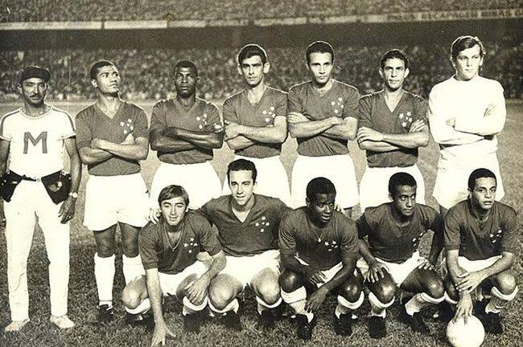

Começo do Clube
O Cruzeiro Esporte Clube teve seu início em 2 de janeiro de 1921, em Belo Horizonte, quando foi fundado por imigrantes da colônia italiana sob o nome de Societá Sportiva Palestra Itália.
Origem do nome
O Cruzeiro Esporte Clube ganhou esse nome em 1942 em homenagem à constelação do Cruzeiro do Sul, um dos maiores símbolos da identidade nacional e presente na bandeira do Brasil.
